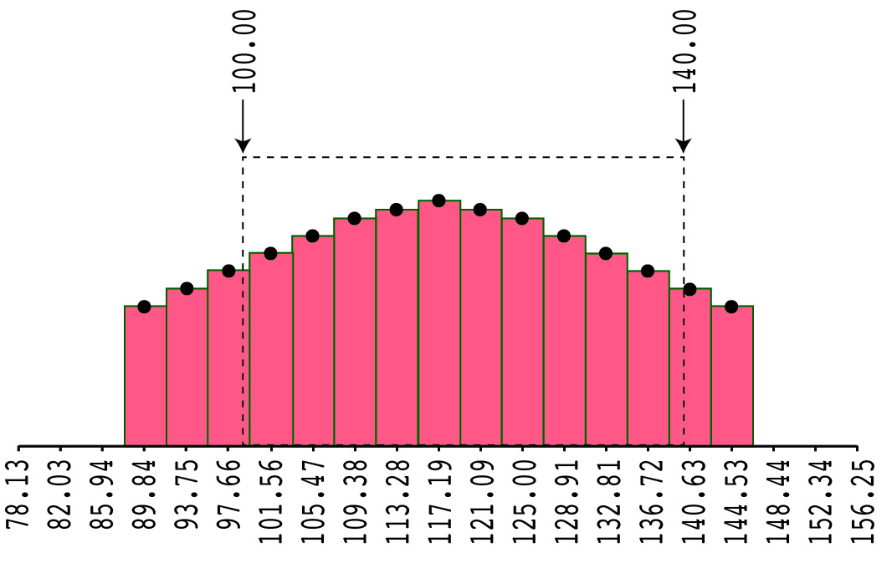

EEG/ERP data are stored as samples at discrete moments in time, and this can lead to some ambiguities when you specify timing information. For example, if you specify a baseline period of -100 to +50 ms, what happens if there is not a sample point at exactly -100 ms or at exactly +50 ms. The purpose of this page is to explain exactly how ERPLAB deals with these issues. This is relevant for any routines that involve time windows, including baseline periods, artifact detection windows, and measurement windows. In addition, ERPLAB obtains additional precision in measuring latencies by interpolating between the discrete samples, and this is also explained here.
The image below illustrates how ERPLAB deals with timing. In this example, the EEG was sampled at 256 Hz, which means that a sample was taken every 3.90625 ms. The time-locking point is always assumed to be at exactly 0 ms, so the subsequent samples were at 3.90625 ms, 7.8125 ms, 11.71875 ms, etc. The image below shows the samples from approximately 78-156 ms.
For an process that uses a mean or area amplitude, ERPLAB treats each sample as if it is the center point of a rectangle. When the user specifies a time window, such as the 100-140 ms window shown here, ERPLAB computes the area as the sum of all the rectangles that are completely within this window, plus the whatever fraction of the first and last rectangles are within the region.

| Table of Contents |